一間 wine bar 的主題不是風格，是誰挑的酒。
A wine bar’s theme is not a style. It is who chose the wine.
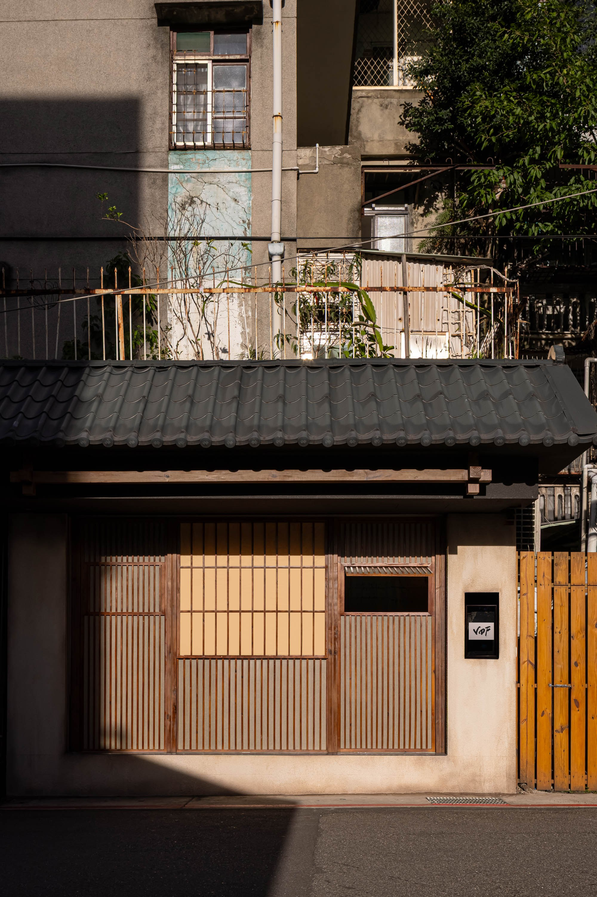
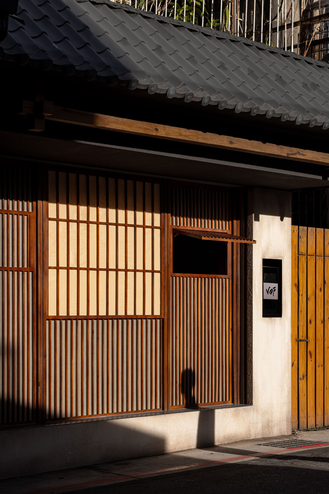
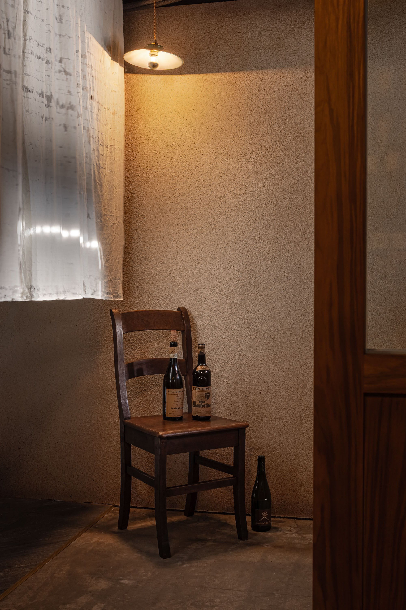
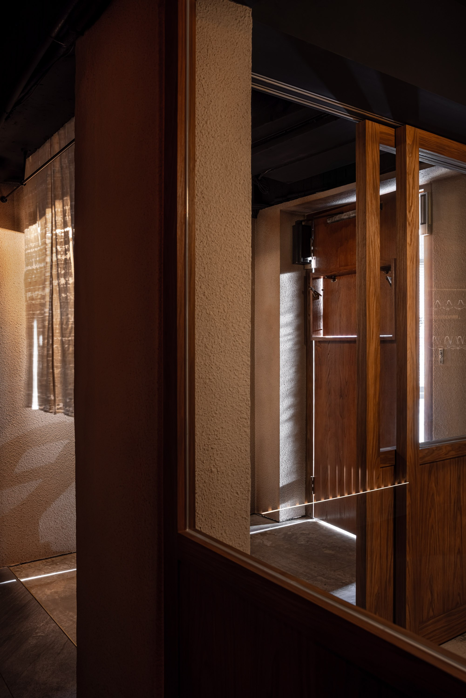
01
店主人最早的想法是，外國人走進來要記得這裡是台灣。這件事來回討論過很多次，最後沒有往那個方向走。題目下得太明確，客人會先記住題目，人和酒都退到後面去。牆從黑色改成仿舊米色，暗的部分交給燈光。
The owner’s first idea was that a foreign guest should walk in and remember this was Taiwan. The question went back and forth many times, and in the end the design did not go that way. Set the theme too clearly and guests remember the theme first, while the people and the wine recede behind it. The walls went from black to an aged beige, and the dark parts are left to the lighting.
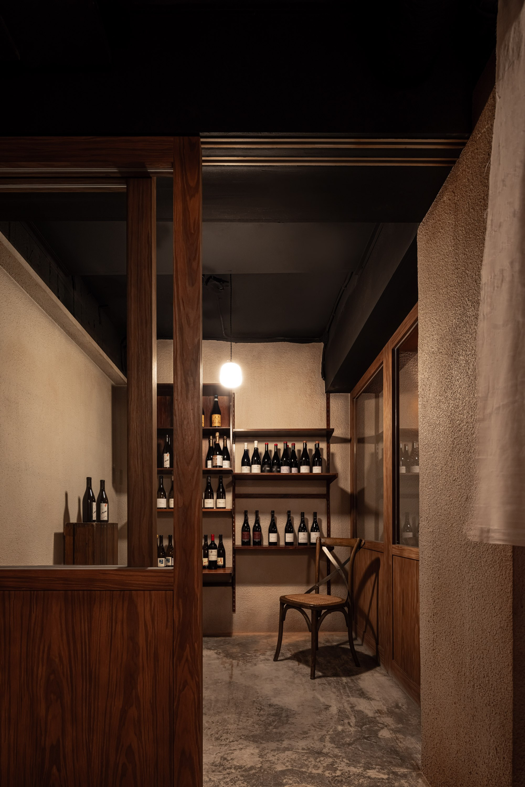
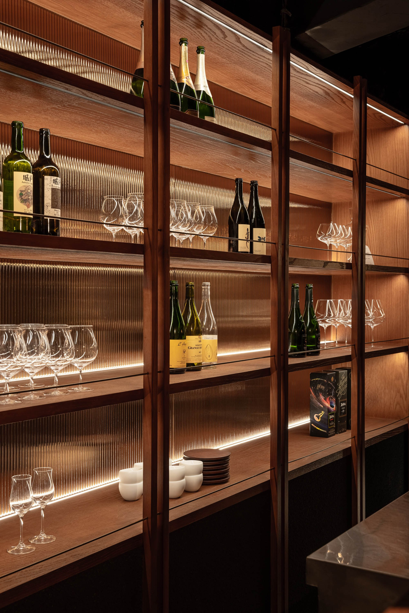
02
酒窖是這樣長出來的。原本的包廂臥榻拆掉，改成一間可以走進去的小房間，酒立著躺著排滿整面牆，像書櫃。客人走進去，一排一排慢慢看，抽出一瓶，讀讀酒標，再放回去，像在挑書。挑的不是酒，是今天晚上的心情。
This is how the cellar came about. The old booth bench came out, and in its place is a small room guests can walk into, bottles standing and lying across a whole wall like a bookcase. A guest walks in, goes slowly along the rows, pulls out a bottle, reads the label and puts it back, like choosing a book. What a guest chooses is not the wine but tonight’s mood.
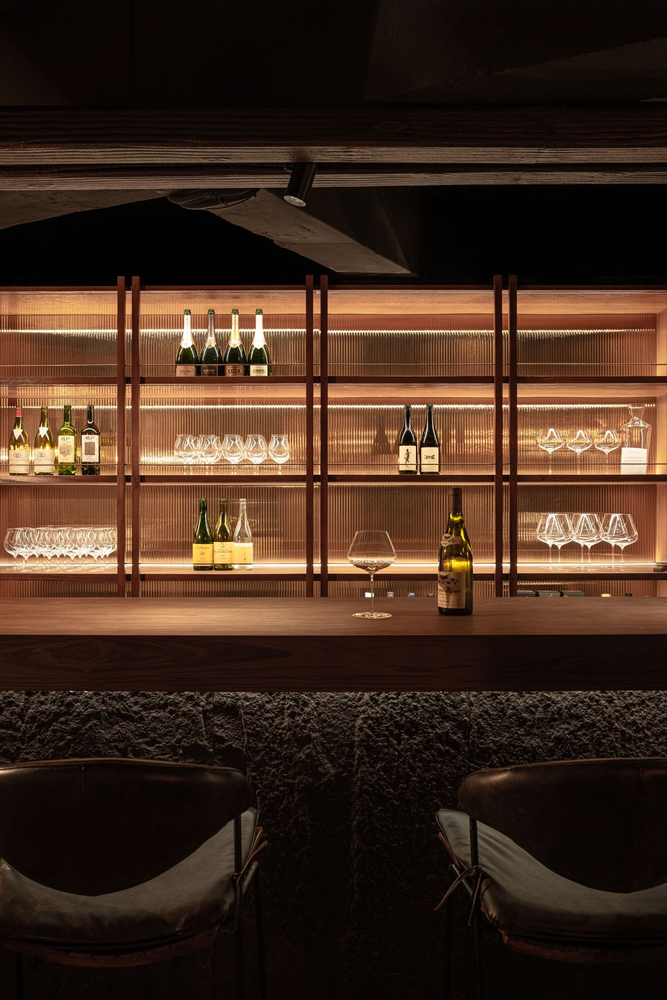
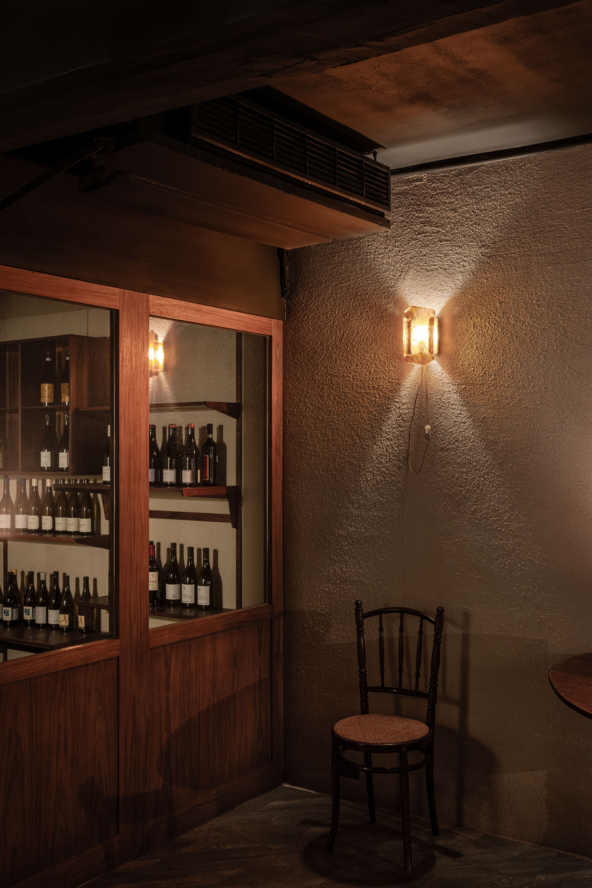
03
店名 VDF 來自 Vin de France，法國酒裡不屬於任何分級的那一類。沒有產區規範，不必符合誰的標準，剩下的只有好不好喝。wine bar 賣的其實是店主人的選擇。同樣的預算，換一個人進的就是完全不同的一牆酒，客人是為了那份選擇才來的。所以主題不必另外想，酒單本身就是主題。空間要做的，是讓那面牆站得住，讓人願意待久一點、多看兩排。
The name VDF comes from Vin de France, the category of French wine that belongs to no classification. No appellation rules, no one’s standard to meet; what is left is only whether it tastes good. What a wine bar sells is really the owner’s selection. With the same budget, a different person buys an entirely different wall of wine, and guests come for what the owner chose. So the theme needs no separate invention: the wine list is the theme. The space only has to make that wall stand up, and make people willing to stay a little longer and look along one more row.
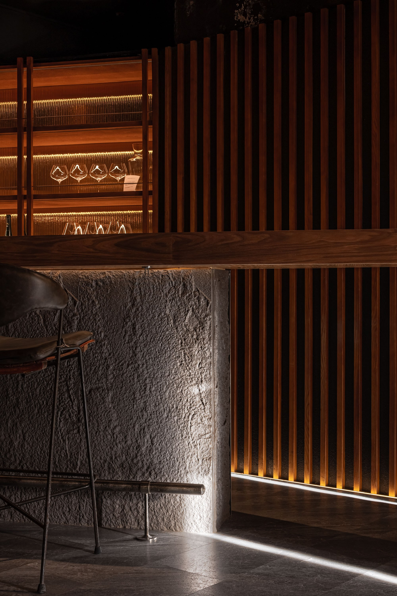
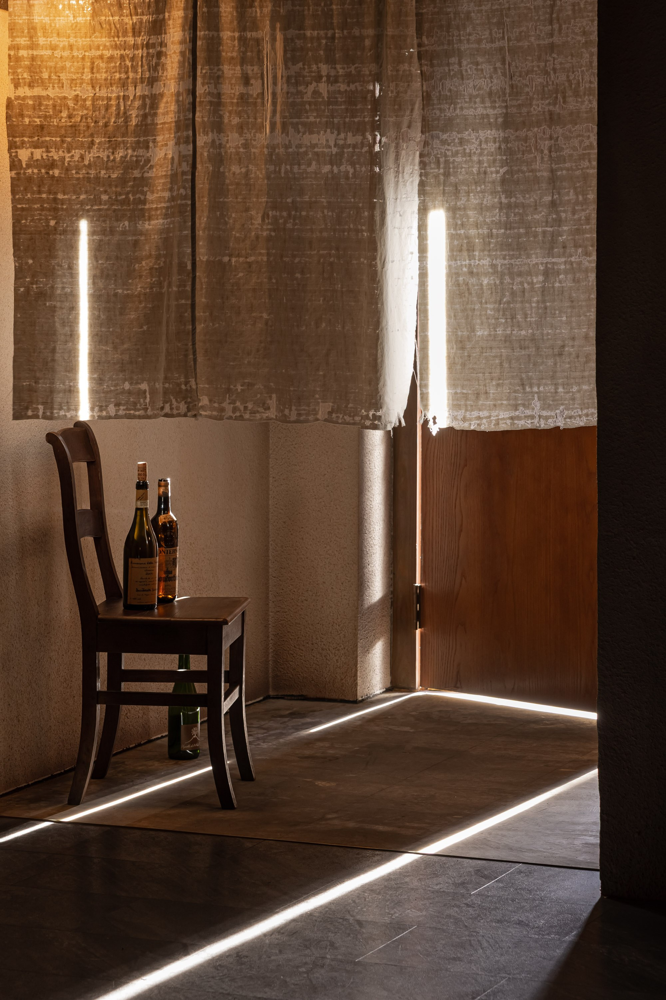
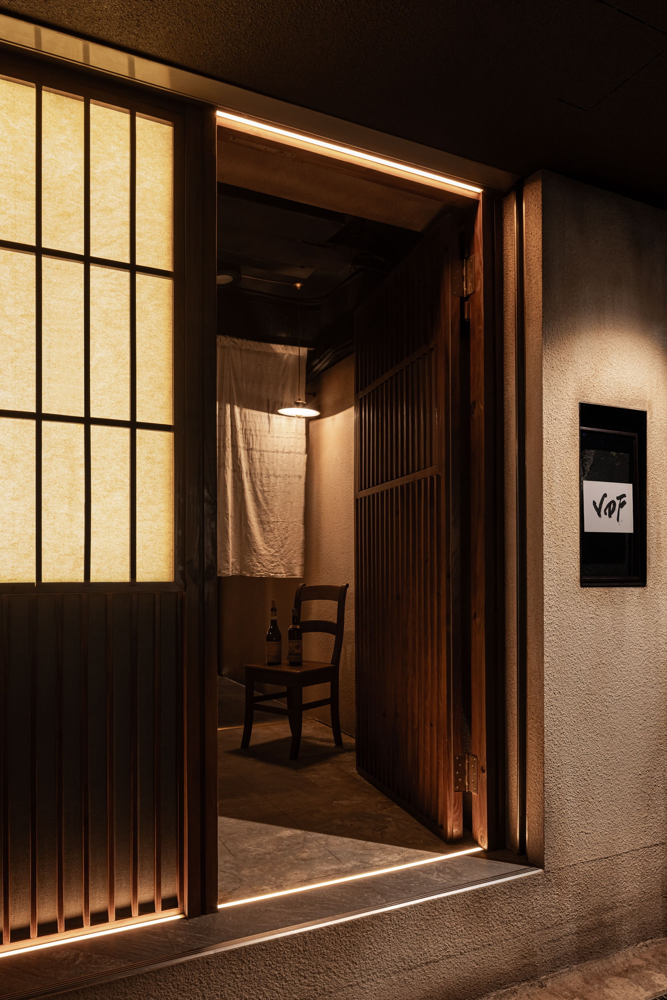
04
進場到完成，十五到十八天。做得完不是因為趕，是因為沒有全拆。只拆掉不必要的東西，該留的留著，力氣全部押在表面。牆改成米色以後，整套燈重新配過。石材檯身的燈帶嵌在腳邊往上掠，凹凸才讀得出來。門和牆同色，在暗處讀成一片平面。做舊交給美術團隊一寸一寸仿，難的不是弄髒，是讓它看起來被人用了很多年，而不是被人做舊過一次。
From site entry to completion, fifteen to eighteen days. It got done not because it was rushed, but because not everything was torn down. Only what was unnecessary came out; what should stay stayed, and all the effort went into the surfaces. Once the walls turned beige, the whole lighting scheme was laid again. The strip light in the stone counter base is set at the foot and grazes upward, so the relief of the surface can be read. The doors and walls share one colour and read as a single plane in the dark. The ageing was handed to an art team, copied inch by inch. The hard part is not making it dirty. It is making it look used for many years, rather than aged once by someone.
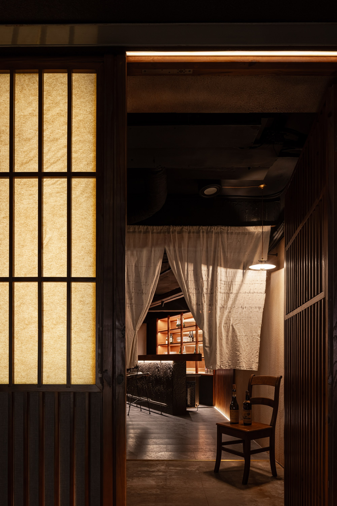
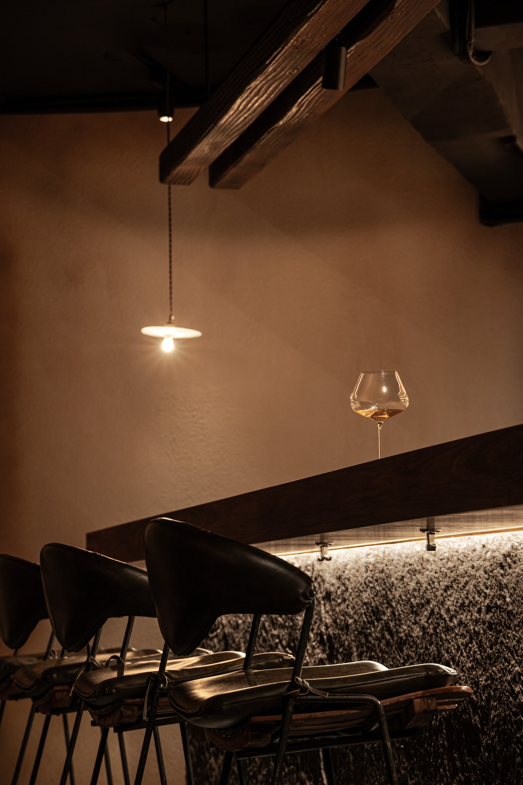
05
吧台上那根老木頭，本來要用真的漂流木吊上去。評估之後放棄：木頭重，吊具要另外算結構，多花的預算還算小事，真正的問題是它就在客人頭上。最後改成 3D 列印，把那根木頭印出來。看起來一樣舊，重量留在圖檔裡。最後進場的是店主人自己挑的家具和舊燈。那些東西不是團隊做的，但整個空間是為了讓它們站得住才那樣做的。新的東西只要做好。舊的東西要做得像沒有人做過。
The old timber above the bar was meant to be real driftwood, hung from above. After weighing it, the idea was given up: timber is heavy, the hangers would need a separate structural calculation, and the extra cost was the smaller matter. The real problem is that it sits directly over the guests’ heads. In the end it was 3D-printed, the timber itself printed out. It looks just as old, and the weight stays in the file. The last things to arrive were the owner’s own furniture and old lamps. The team did not make them, but the whole space was made the way it is so that they could stand. New things only need to be made well. Old things have to be made as if no one made them.
All Photos